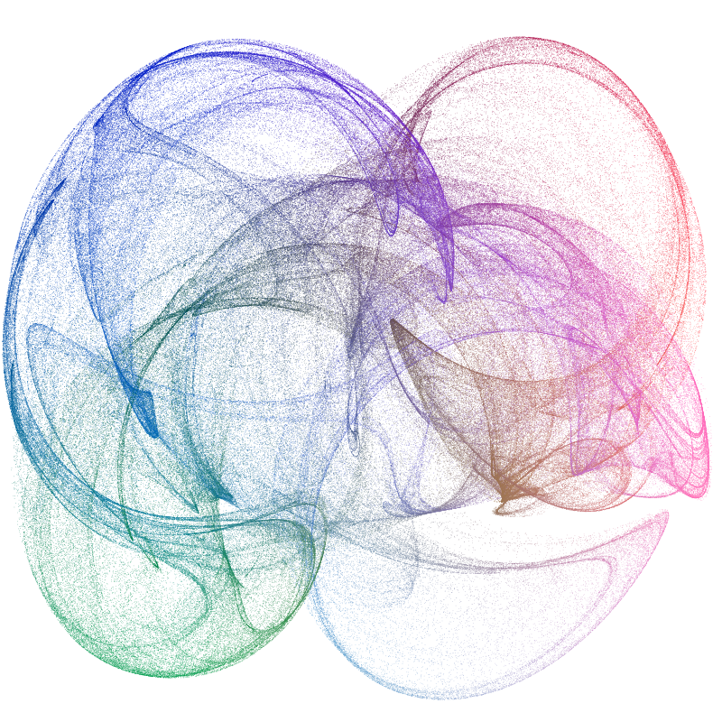

More examples
One place to look for examples is the Luxor/test directory.

An early test

using Luxor
Drawing(1200, 1400, "basic-test.png") # or PDF/SVG filename for PDF or SVG
origin()
background("purple")
setopacity(0.7) # opacity from 0 to 1
sethue(0.3,0.7,0.9) # sethue sets the color but doesn't change the opacity
setline(20) # line width
rect(-400,-400,800,800, :fill) # or :stroke, :fillstroke, :clip
randomhue()
circle(0, 0, 460, :stroke)
circle(0,-200,400,:clip) # a circular clipping mask above the x axis
sethue("gold")
setopacity(0.7)
setline(10)
for i in 0:pi/36:2pi - pi/36
move(0, 0)
line(cos(i) * 600, sin(i) * 600 )
strokepath()
end
clipreset() # finish clipping/masking
fontsize(60)
setcolor("turquoise")
fontface("Optima-ExtraBlack")
textwidth = textextents("Luxor")[5]
textcentred("Luxor", 0, currentdrawing.height/2 - 400)
fontsize(18)
fontface("Avenir-Black")
# text on curve starting at angle 0 rads centered on origin with radius 550
textcurve("THIS IS TEXT ON A CURVE " ^ 14, 0, 550, O)
finish()
preview() # on macOS, opens in PreviewIllustrating this document
This documentation was built with Documenter.jl, which is an amazingly powerful and flexible documentation generator written in Julia. The illustrations are mostly created when the HTML pages are built: the Julia source for the image is stored in the Markdown source document, and the code to create the images runs each time the documentation is generated.
The Markdown markup looks like this:
```@example
using Luxor # hide
Drawing(600, 250, "assets/figures/polysmooth-pathological.png") # hide
origin() # hide
background("white") # hide
setopacity(0.75) # hide
srand(42) # hide
setline(1) # hide
p = star(O, 60, 5, 0.35, 0, vertices=true)
setdash("dot")
sethue("red")
prettypoly(p, close=true, :stroke)
setdash("solid")
sethue("black")
polysmooth(p, 40, :fill, debug=true)
finish() # hide
```
and after you run Documenter's build process the HTML output looks like this:
p = star(O, 60, 5, 0.35, 0, vertices=true)
setdash("dot")
sethue("red")
prettypoly(p, close=true, :stroke)
setdash("solid")
sethue("black")
polysmooth(p, 40, :fill, debug=true)
Why turtles?
An interesting application for turtle-style graphics is for drawing Lindenmayer systems (l-systems). Here's an example of how a complex pattern can emerge from a simple set of rules, taken from Lindenmayer.jl:

The definition of this figure is:
penrose = LSystem(Dict("X" => "PM++QM----YM[-PM----XM]++t",
"Y" => "+PM--QM[---XM--YM]+t",
"P" => "-XM++YM[+++PM++QM]-t",
"Q" => "--PM++++XM[+QM++++YM]--YMt",
"M" => "F",
"F" => ""),
"1[Y]++[Y]++[Y]++[Y]++[Y]")where some of the characters—eg "F", "+", "-", and "t"—issue turtle control commands, and others—"X,", "Y", "P", and "Q"—refer to specific components of the design. The execution of the l-system involves replacing every occurrence in the drawing code of every dictionary key with the matching values.
Strange
It's usually better to draw fractals and similar images using pixels and image processing tools. But just for fun it's an interesting experiment to render a strange attractor image using vector drawing rather than placing pixels. This version uses about 600,000 circular dots (which is why it's better to target PNG rather than SVG or PDF for this example!).
using Luxor, Colors, ColorSchemes
function strange(dotsize, w=800.0)
xmin = -2.0; xmax = 2.0; ymin= -2.0; ymax = 2.0
cs = ColorSchemes.botticelli
Drawing(w, w, "assets/figures/strange-vector.png")
origin()
background("white")
xinc = w/(xmax - xmin)
yinc = w/(ymax - ymin)
# control parameters
a = 2.24; b = 0.43; c = -0.65; d = -2.43; e1 = 1.0
x = y = z = 0.0
wover2 = w/2
for j in 1:w
for i in 1:w
xx = sin(a * y) - z * cos(b * x)
yy = z * sin(c * x) - cos(d * y)
zz = e1 * sin(x)
x = xx; y = yy; z = zz
if xx < xmax && xx > xmin && yy < ymax && yy > ymin
xpos = rescale(xx, xmin, xmax, -wover2, wover2) # scale to range
ypos = rescale(yy, ymin, ymax, -wover2, wover2) # scale to range
col1 = get(cs, rescale(xx, -1, 1, 0.0, .5))
col2 = get(cs, rescale(yy, -1, 1, 0.0, .4))
col3 = get(cs, rescale(zz, -1, 1, 0.0, .2))
sethue(mean([col1, col2, col3]))
circle(Point(xpos, ypos), dotsize, :fill)
end
end
end
finish()
end
strange(.3, 800)WARNING: Method definition mapc(Any, Number) in module ColorTypes at /Users/travis/.julia/v0.5/ColorTypes/src/operations.jl:104 overwritten in module ImageCore at /Users/travis/.julia/v0.5/ImageCore/src/map.jl:110.
WARNING: Method definition mapc(Any, Number) in module ColorTypes at /Users/travis/.julia/v0.5/ColorTypes/src/operations.jl:104 overwritten in module ImageCore at /Users/travis/.julia/v0.5/ImageCore/src/map.jl:110.
WARNING: Method definition mapc(Any, Number) in module ColorTypes at /Users/travis/.julia/v0.5/ColorTypes/src/operations.jl:104 overwritten in module ImageCore at /Users/travis/.julia/v0.5/ImageCore/src/map.jl:110.
WARNING: Method definition mapc(Any, Number) in module ColorTypes at /Users/travis/.julia/v0.5/ColorTypes/src/operations.jl:104 overwritten in module ImageCore at /Users/travis/.julia/v0.5/ImageCore/src/map.jl:110.
WARNING: Method definition mapc(Any, Number) in module ColorTypes at /Users/travis/.julia/v0.5/ColorTypes/src/operations.jl:104 overwritten in module ImageCore at /Users/travis/.julia/v0.5/ImageCore/src/map.jl:110.
WARNING: Method definition mapc(Any, Number) in module ColorTypes at /Users/travis/.julia/v0.5/ColorTypes/src/operations.jl:104 overwritten in module ImageCore at /Users/travis/.julia/v0.5/ImageCore/src/map.jl:110.
WARNING: Method definition mapc(Any, Number) in module ColorTypes at /Users/travis/.julia/v0.5/ColorTypes/src/operations.jl:104 overwritten in module ImageCore at /Users/travis/.julia/v0.5/ImageCore/src/map.jl:110.
WARNING: Method definition mapc(Any, Number) in module ColorTypes at /Users/travis/.julia/v0.5/ColorTypes/src/operations.jl:104 overwritten in module ImageCore at /Users/travis/.julia/v0.5/ImageCore/src/map.jl:110.
Hipster logo: text on curves
using Luxor
function hipster(fname, toptext, bottomtext)
Drawing(400, 350, fname)
origin()
rotate(pi/8)
circle(O, 135, :clip)
sethue("antiquewhite2")
paint()
sethue("gray20")
setline(3)
circle(O, 130, :stroke)
circle(O, 135, :stroke)
circle(O, 125, :fill)
sethue("antiquewhite2")
circle(O, 85, :fill)
sethue("wheat")
fontsize(20)
fontface("Helvetica-Bold")
textcurvecentered(toptext, (3pi)/2, 100, O, clockwise=true, letter_spacing=1, baselineshift = -4)
textcurvecentered(bottomtext, pi/2, 100, O, clockwise=false, letter_spacing=2, baselineshift = -15)
sethue("gray20")
map(pt -> star(pt, 40, 3, 0.5, -pi/2, :fill), ngon(O, 40, 3, 0, vertices=true))
circle(O.x + 30, O.y - 55, 15, :fill)
# cheap weathered texture:
sethue("antiquewhite2")
setline(0.4)
setdash("dot")
for i in 1:500
line(randompoint(Point(-200, -350), Point(200, 350)),
randompoint(Point(-200, -350), Point(200, 350)),
:stroke)
end
finish()
end
hipster("assets/figures/textcurvecenteredexample.png",
"• DRAWN WITH LUXOR • ",
"VECTOR GRAPHICS FOR JULIA")